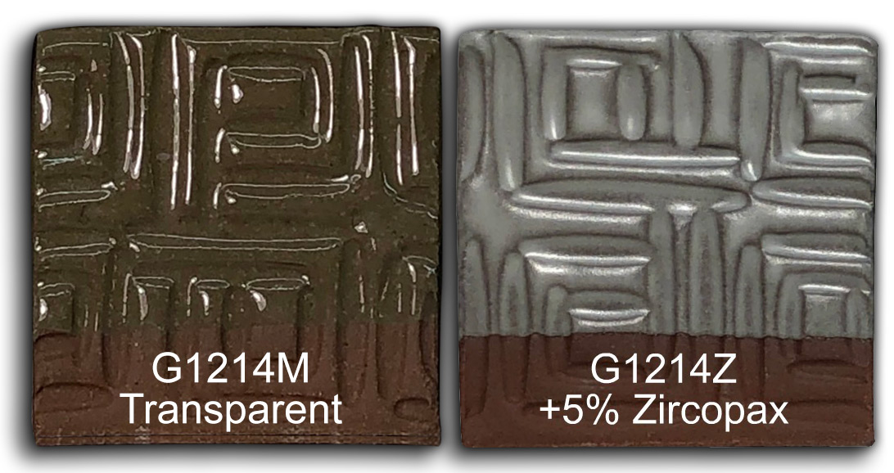

3D Printing a Clay Cookie Cutter-Stamper
A 3-minute Mug with Plainsman Polar Ice
A Broken Glaze Meets Insight-Live and a Magic Material
Accessing Recipes from "Mid-Fire Glazes" book in Insight-Live
Adjusting the Thixotropy of an Engobe for Pottery
Analysing a Crazing, Cutlery-marking Glaze Using Insight-Live
Compare the Chemistry of Recipes Using Insight-Live
Connecting an External Image to Insight-Live Pictures
Converting G1214M Cone 6 transparent glaze to G1214Z matte
Create a Synthetic Feldspar in Insight-Live
Creating a Cone 6 Oil-Spot Overglaze Effect
Design a Triangular Pottery Plate Block Mold in Fusion 360
Designing a Jigger Mold for a Bowl Using Fusion 360 CAD
Downloading and 3D-Printing a 3MF file
Draw a propeller in Fusion 360 for use on an overhead propeller mixer
Drawing a Mug Handle Mold in Fusion 360
Drawing a Mug Mold Using OnShape CAD
Enter a Recipe Into Insight-live
Entering TestData Into Insight-Live
Fine tune the thixotropy of a glaze or engobe slurry
Getting Frustrated With a 55% Gerstley Borate Glaze
How I Developed the G2926B Cone 6 Transparent Base Glaze
How I Formulated G2934 Cone 6 Silky MgO Matte Glaze Using Insight-Live
How to Apply a White Slip to Terra Cotta Ware
How to Paste a Recipe Into Insight-live
Importing Data into Insight-live
Importing Desktop Insight Recipes to Insight-live
Importing Generic CSV Recipe Data into Insight-Live
Insight-Live Meets a Silica Deprived Glaze Recipe
Insight-Live Quick Tour
Liner Glazing a Stoneware Mug
Make a precision plaster mold for slip casting using Fusion 360 and 3D Printing
Making ceramic glaze flow test balls
Making test bars for the SHAB, LDW and DFAC tests
Manually program your kiln or suffer glaze defects!
Mica and Feldspar Mine of MGK Minerals
Predicting Glaze Durability by Chemistry in Insight-Live
Preparing Pictures for Insight-live
Replace Lithium Carbonate With Lithium Frit Using Insight-Live
Replacing 10% Gerstley Borate in a clear glaze
Same Beer Bottle Mold Using Fusion 360 and OnShape CAD
Signing Up at Insight-live.com
Signing-In at Insight-live.com
Slip cast a stoneware beer bottle
Substitute Ferro Frit 3134 For Another Frit
Substituting Custer Feldspar for Another in a Cone 10R Glaze Recipe
Thixotropy and How to Gel a Ceramic Glaze
Use Insight-live to substitute materials in a recipe
Watch Thixotropy Happen With a 20kg Batch of Dipping Glaze
Converting G1214M Cone 6 transparent glaze to G1214Z matte
How I converted a glossy glaze into a matte glaze by using glaze chemistry and recipe logic.
Transcript/Notes
The G1214Z vertical video (for phones) is also available.
Scene 1
To demonstrate the utility of viewing a glaze as an oxide formula rather than a recipe - Let’s convert a glossy cone 6 glaze into a matte.
In my Insight-live account I’ll use the “Advanced Search”, choose the “demonstration recipes”, look for “G1214”, and open the M version.
more..
Then, I will duplicate it, edit it and change the name to “Cone 6 Calcium Matte” and save.Then I’ll auto-assign a code number (for writing on test specimens),
Then, I’ll turn on “formula calculation” for it.
Finally, from the “Limit Recipes”, I’ll clear the search field and choose the TARGET2.
Notice the maximum Al2O3 is 0.65 and the minimum SiO2 is 2.4.
We are going to be crowding both of these limits to get a matte.
Scene 2
Notice also the recommended maximum for calcium oxide: 0.55.
And the note “CaO can be higher if MgO is zero”.
But the clear glaze has 0.79. Why? It was formulated to work with chrome-tin stains, they require high calcium oxide.
This makes it an ideal starting point to make a calcium matte.
Our glaze also needs lower silicon dioxide and higher alumina oxide.
Their current ratio is 9.4:1. But for a matte we need around 5:1 (I can click here to find out more).
The first step is to reduce the silica.
To do that I’ll click here,, set the increment at “20” and click the silica down arrow.
That reduces the Silica:Alumina ratio considerably.
Step two is to increase alumina oxide. Notice how high the alumina content of kaolin is.
I’ll double its amount in the recipe.
Now the ratio is way down.
Notice how aggressive I had to be to effect the desired changes in the chemistry.
Scene 3 (start here)
Now I have a problem: This calculated thermal expansion is too high to fit the clay bodies I use.
That’s because of the combination of these two.
If I click on the sodium we can see its thermal expansion: 0.387 (by the way, this works because of the tight integration between Insight-live and the Digitalfire Reference Library).
And potassium is almost as much.
But notice calcium oxide: 0.148. Much lower.
My plan is to increase it at the expense of the sodium and potassium, increasing the matteness and reducing the thermal expansion at the same time.
The Feldspar is the main contributor of KNaO (the combination of the two).
Let’s display it beside Ferro frit 3124.
The Frit 3124 has all the things I want:
-Less KNaO than the feldspar
-More CaO than the feldspar
-Significent Al2O3 and enough B2O3 to melt the glaze well
The existing 3134 only has two of these benefits.
Scene 4:
Now I’ll make three changes:
-Change the kaolin amount back to 20.
-Zero the 3134
-Replace the feldspar with Frit 3124
Notice the impact on the calculated formula: The B203 is down.
You may remember that its concentration is lower in 3124 than in 3134.
So, I’ll use the Frit 3124 increment arrow (set at “1”) to get it back up to 0.2.
-Then I’ll use the kaolin increment arrow to increase the Al2O3 to 0.45.
-Finally, I’ll do the same with the silica to take the SiO2 to 2.5.
Notice I have achieved my goal in the formula.
-There is more CaO and less KNaO.
-The thermal expansion is significantly down.
-The silica and alumina are about where I want them.
Scene 5:
There is another possible problem here: Too much kaolin (26 out of 77), this creates the danger that the glaze may shrink, crack and then crawl on firing.
To fix that I’ll replace ⅓ of the raw kaolin with calcined kaolin.
I’ll just borrow the unused Frit 3134 line for it and use values of 17 and 9.
This pushes up the Al2O3. That happens because the calcined material is more concentrated.
I’ll nudge the raw kaolin one down to rematch the Al2O3 in the formula.
Scene 6:
Matte glazes look best when they have opacity.
I’ll add four parts Zircopax (by editing with more columns).
I’ll set it not to participate in the calculated chemistry using this checkbox. Then Save.
Finally, I’ll re-total to 104 (100 for the recipe plus 4 for opacifier)
I’ll check this box so the Zircopax stays at 4.
Scene 7:
Now I have closed everything but this new recipe.
Let’s put it beside the “High Calcium Semi-Matte” from the Mastering Glazes book.
Then our frit 3124 and their frit 3195.
Notice their Frit 3195 sources less CaO, Na2O and SiO2 but a lot more boron.
The main effect on their recipe is alot more raw silica. Raw silica doesn’t always dissolve well in the melt, for matte glazes, having as little as possible is better.
Notice the kaolin, 30%. This carries the same issue we just dealt with.
Notice their Si:Al ratio is much higher, this means consistent slow cooling is a necessity to get the desired surface.
Their recipe has one advantage: This number, the thermal expansion. That means it will work on more bodies without crazing.
Scene 8:
Let’s look at a few fired samples. I know this recipe as G1214Z (with just raw kaolin) or G1214Z1 (having a mix of raw and calcined kaolin). Some of these were cooled naturally and others slowly using our C6DHSC firing schedule.
Links
| Typecodes |
Glaze Chemistry
Case studies where glaze chemistry was used to solve a problem. |
| URLs |
https://cdn.digitalfire.com/G1214Z-Mobile.mp4
Vertical version of G1214Z video |
Click here for case-studies of Insight-Live fixing problems

This picture has its own page with more detail, click here to see it.
You will see examples of replacing unavailable materials (especially frits), fixing various issues (e.g. running, crazing, settling), making them melt more, adjusting matteness, etc. Insight-Live has an extensive help system (the round blue icon on the left) that also deals with fixing real-world problems and understanding glazes and clay bodies.
Converting a glossy transparent glaze to a calcia matte
A ten-minute video to give glaze nerds goose bumps!

This picture has its own page with more detail, click here to see it.
Watch the G1214Z video to see me convert the G1214M cone 6 clear base into G1214Z cone 6 calcia matte using simple glaze chemistry and recipe logic. This first appeared in the Digitalfire desktop Insight instruction manual 30 years ago. It is an understatement to say that this process is interesting if you want to know more about glazes, their chemistry and recipe logic. Watch this video and see me adjust the recipe of my high-calcium transparent cone 6 glaze to convert it into a calcia matte. In an Insight-live.com account, the process is easy enough for anyone. We'll cut the Si:Al ratio, increase the CaO, maintain the thermal expansion for glaze fit and make the recipe shrinkage-adjustable using a mix of calcined kaolin and raw kaolin. We will even compare it with the High Calcium Semimatte from Mastering Glazes.
 PayPal | No tracking, No ads, No paywall, No transient content! Just organized, concise information constantly updated and improved. Was this helpful? Consider supporting me. |
| By Tony Hansen Follow me on        |  |
Got a Question?
Buy me a coffee and we can talk 

https://digitalfire.com, All Rights Reserved
Privacy Policy